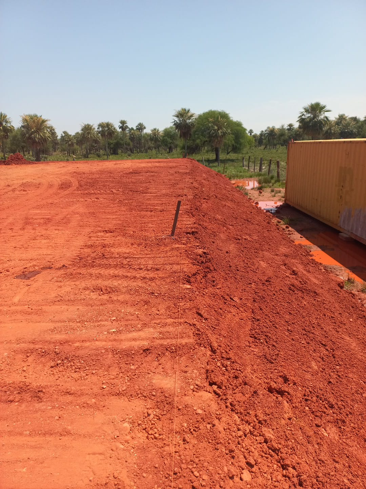

Planificación y distribución
Plan maestro, ubicación estratégica de sectores y organización de suelo industrial.
↗
Diseñar un parque industrial es proyectar un ecosistema completo. Suelo, acceso, energía, servicios y visión de largo plazo, coordinados desde el primer plano.
Un desarrollo industrial combina una lógica territorial con una lógica empresarial. La propuesta MCA contempla planificación y diseño, distribución de lotes, redes viales, sistemas eléctricos, coordinación técnica y acompañamiento a inversores.
Consultar desarrollo industrial ↗Un concepto navegable que demuestra cómo MCA podría presentar sectores y oportunidades de inversión. Los lotes A–F son ficticios y no están disponibles a la venta.
Ejemplo de sector destinado a implantaciones productivas, con conectividad vial e infraestructura de apoyo según las necesidades del proyecto.
Los sectores son ficticios: no representan propiedades, disponibilidad, habilitaciones, precios ni superficies comerciales verificadas.
Hablar con MCA sobre inversionesLos estudios y soluciones se definen de acuerdo con cada emplazamiento. Estas áreas forman parte de la propuesta integral solicitada por MCA.
Plan maestro, ubicación estratégica de sectores y organización de suelo industrial.
↗Red interna, circulación logística, conexión y posibilidades de expansión.
↗Infraestructura eléctrica y sistemas requeridos para instalaciones productivas.
↗Coordinación de ingeniería, ejecución y acompañamiento a operadores e inversores.
↗
MATERIAL PUBLICADO EN LA WEB ACTUAL · MCA CONSTRUCTORALa página actual de MCA presenta el Parque Industrial y Logístico Paraná como un desarrollo de 30.000 m² con infraestructura y servicios previstos para proyectos industriales. La disponibilidad, las etapas y los alcances reales deben confirmarse.
Una oportunidad de inversión comienza con una conversación bien planteada y una evaluación técnica seria.
Presentar una oportunidad